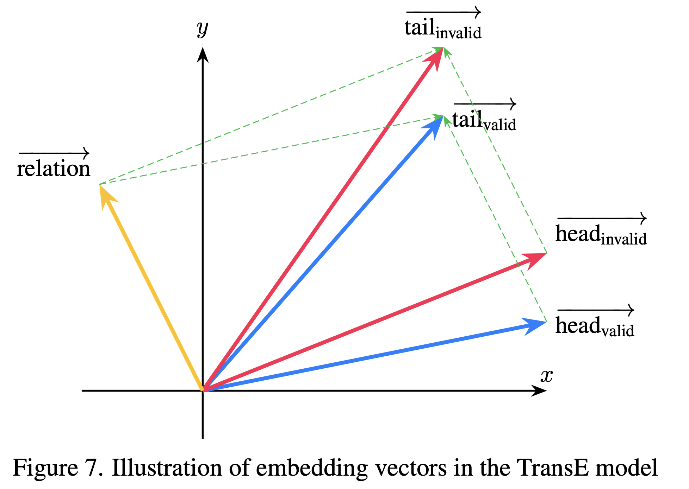

Baseline TransE Embedding
Illustration of embedding vectors in the TransE model
Experiments on Wordnet 18 and FB15k Dataset
Research Areas in Knowledge Graphs
Research on knowledge graphs spans four main areas: knowledge representation learning, knowledge acquisition, temporal knowledge graphs, and knowledge-aware applications. Knowledge representation learning focuses on embedding entities and relations, exploring representation space, scoring functions, encoding models, and auxiliary information. Knowledge acquisition addresses graph completion, relation extraction, and entity discovery using embedding, reasoning, and learning-based methods. Temporal knowledge graphs model evolving facts over time. Knowledge-aware applications integrate KGs into tasks like question answering, recommendation, and language understanding.
BibTeX
@misc{hoangminh2025graphcollaborativeattentionnetwork,
title={Graph Collaborative Attention Network for Link Prediction in Knowledge Graphs},
author={Thanh Hoang-Minh},
year={2025},
eprint={2507.03947},
archivePrefix={arXiv},
primaryClass={cs.LG},
url={https://arxiv.org/abs/2507.03947},
}